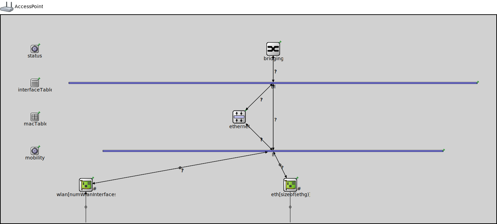

Package: inet.node.wireless
AccessPoint
compound moduleA generic access point supporting multiple wireless radios, and multiple ethernet ports. The type of the ethernet MAC, relay unit and wireless card can be specified as parameters.
By default, the access point is stationary (~StationaryMobility), but that can also be configured by a parameter.
The wlan[*].mgmt.typename can be configured for different management types currently it can be: ~Ieee80211MgmtApSimplified and ~Ieee80211MgmtAp. By default it is ~Ieee80211MgmtAp. The Simplified version does not support channel scanning, authentication and association . In this case, nodes must explicitly specify the hardware address of the wlan card they want to be associated with.
Usage diagram
The following diagram shows usage relationships between types. Unresolved types are missing from the diagram.
Used in
| Name | Type | Description |
|---|---|---|
| AnnotationShowcase | network | (no description) |
| ConfiguratorC | network | (no description) |
| ConfiguratorE | network | (no description) |
| HandoverNetwork | network | (no description) |
| HandoverShowcase | network | (no description) |
| Ieee80211VisualizationAdvancedFeaturesShowcase | network | (no description) |
| Ieee80211VisualizationDisplayingAssociationsShowcase | network | (no description) |
| Ieee80211VisualizationSignalLevelsShowcase | network | (no description) |
| Ieee80211VisualizationVisualizingHandoverShowcase | network | (no description) |
| InterfaceTableVisualizationAdvancedFeaturesShowcase | network | (no description) |
| Lan80211 | network | (no description) |
| Lan80211ac | network | (no description) |
| mIPv6Network | network | (no description) |
| MultiRadio | network | (no description) |
| MultiRadioShowcase | network | (no description) |
| NetworkPathRIPShowcase | network | (no description) |
| PacketDropQueueOverflowShowcase | network | (no description) |
| PhysicalLinkVisualizerFilteringShowcase | network | (no description) |
| QosShowcase | network | (no description) |
| QosThroughput | network | (no description) |
| Throughput | network | (no description) |
| WiredAndWirelessHostsWithAP | network | (no description) |
| WirelessNetWith2DHCP | network | (no description) |
| WirelessNetWithDHCP | network | (no description) |
Parameters
| Name | Type | Default value | Description |
|---|---|---|---|
| numWlanInterfaces | int | 1 |
the number of radios in the access point |
| hasStatus | bool | false | |
| fcsMode | string | "declared" |
Properties
| Name | Value | Description |
|---|---|---|
| networkNode | ||
| labels | node | |
| display | i=device/accesspoint |
Gates
| Name | Direction | Size | Description |
|---|---|---|---|
| radioIn [ ] | input | numWlanInterfaces | |
| ethg [ ] | inout |
Unassigned submodule parameters
| Name | Type | Default value | Description |
|---|---|---|---|
| status.initialStatus | string | "UP" |
TODO @signal, @statistic |
| interfaceTable.displayAddresses | bool | false |
whether to display IP addresses on links |
| macTable.agingTime | double | ||
| macTable.forwardingTableFile | string | ||
| bl.displayStringTextFormat | string | "processed %p pk (%l)" |
determines the text that is written on top of the submodule |
| bl.forwardServiceRegistration | bool | true | |
| bl.forwardProtocolRegistration | bool | true | |
| li.displayStringTextFormat | string | "processed %p pk (%l)" |
determines the text that is written on top of the submodule |
| li.forwardServiceRegistration | bool | true | |
| li.forwardProtocolRegistration | bool | true | |
| eth.bitrate | double |
Source code
// // A generic access point supporting multiple wireless radios, and // multiple ethernet ports. The type of the ethernet MAC, relay unit // and wireless card can be specified as parameters. // // By default, the access point is stationary (~StationaryMobility), // but that can also be configured by a parameter. // // The wlan[*].mgmt.typename can be configured for different management types // currently it can be: ~Ieee80211MgmtApSimplified and ~Ieee80211MgmtAp. // By default it is ~Ieee80211MgmtAp. The Simplified version does not // support channel scanning, authentication and association . // In this case, nodes must explicitly specify the hardware address // of the wlan card they want to be associated with. // module AccessPoint { parameters: @networkNode(); @labels(node,ethernet-node,wireless-node); @display("i=device/accesspoint"); int numWlanInterfaces = default(1); // the number of radios in the access point bool hasStatus = default(false); string fcsMode @enum("declared","computed") = default("declared"); wlan[*].protocol = default("ethernetmac"); wlan[*].mgmt.typename = default("Ieee80211MgmtAp"); wlan[*].llc.typename = default("Ieee80211Portal"); wlan[*].agent.typename = default(""); wlan[*].radio.antenna.mobilityModule = default("^.^.^.mobility"); eth[*].encap.typename = ""; *.macTableModule = default(absPath(".macTable")); *.interfaceTableModule = default(absPath(".interfaceTable")); bridging.hasStp = false; *.fcsMode = this.fcsMode; ethernet.registerProtocol = default(true); gates: input radioIn[numWlanInterfaces] @directIn; inout ethg[] @labels(EtherFrame-conn); submodules: status: NodeStatus if hasStatus { @display("p=100,100;is=s"); } interfaceTable: InterfaceTable { @display("p=100,200;is=s"); } macTable: <default("MacForwardingTable")> like IMacForwardingTable { @display("p=100,300;is=s"); } mobility: <default("StationaryMobility")> like IMobility { @display("p=100,400;is=s"); } bridging: <default(firstAvailable("Ieee8021dRelay","MacRelayUnit"))> like IMacRelayUnit if sizeof(ethg)+numWlanInterfaces > 1 && typename != "" { @display("p=800,100"); } bl: MessageDispatcher if sizeof(ethg)+numWlanInterfaces > 1 && exists(bridging) { @display("p=800,200;b=1200,5,,,,1"); } ethernet: <default("EthernetEncapsulation")> like IEthernetLayer if typename != "" && exists(bridging) { @display("p=700,300"); } li: MessageDispatcher { @display("p=800,400;b=1000,5,,,,1"); } wlan[numWlanInterfaces]: <default("Ieee80211Interface")> like IWirelessInterface { @display("p=250,500,row,150;q=queue"); } eth[sizeof(ethg)]: <default("EthernetInterface")> like IEthernetInterface { mac.promiscuous = true; @display("p=850,500,row;q=txQueue"); } connections allowunconnected: bl.out++ --> bridging.lowerLayerIn if sizeof(ethg)+numWlanInterfaces > 1 && exists(bridging); bl.in++ <-- bridging.lowerLayerOut if sizeof(ethg)+numWlanInterfaces > 1 && exists(bridging); bl.out++ --> li.in++ if exists(bl); li.out++ --> bl.in++ if exists(bl); bl.out++ --> ethernet.upperLayerIn if exists(ethernet); ethernet.upperLayerOut --> bl.in++ if exists(ethernet); ethernet.lowerLayerOut --> li.in++ if exists(ethernet); li.out++ --> ethernet.lowerLayerIn if exists(ethernet); // connections to network outside // wireless interfaces MUST be connected first (i.e. ports 0..numWlanInterfaces-1) // because broadcasts must be handled differently for wireless IFs by the bridging for i=0..numWlanInterfaces-1 { radioIn[i] --> { @display("m=s"); } --> wlan[i].radioIn; wlan[i].upperLayerOut --> li.in++ if sizeof(ethg)+numWlanInterfaces > 1 && exists(bridging); wlan[i].upperLayerIn <-- li.out++ if sizeof(ethg)+numWlanInterfaces > 1 && exists(bridging); } // ethernet must be connected only AFTER wireless ports for i=0..sizeof(ethg)-1 { eth[i].phys <--> { @display("m=s"); } <--> ethg[i]; eth[i].upperLayerIn <-- li.out++ if sizeof(ethg)+numWlanInterfaces>1; eth[i].upperLayerOut --> li.in++ if sizeof(ethg)+numWlanInterfaces>1; } }File: src/inet/node/wireless/AccessPoint.ned
 This documentation is released under the Creative Commons license
This documentation is released under the Creative Commons license